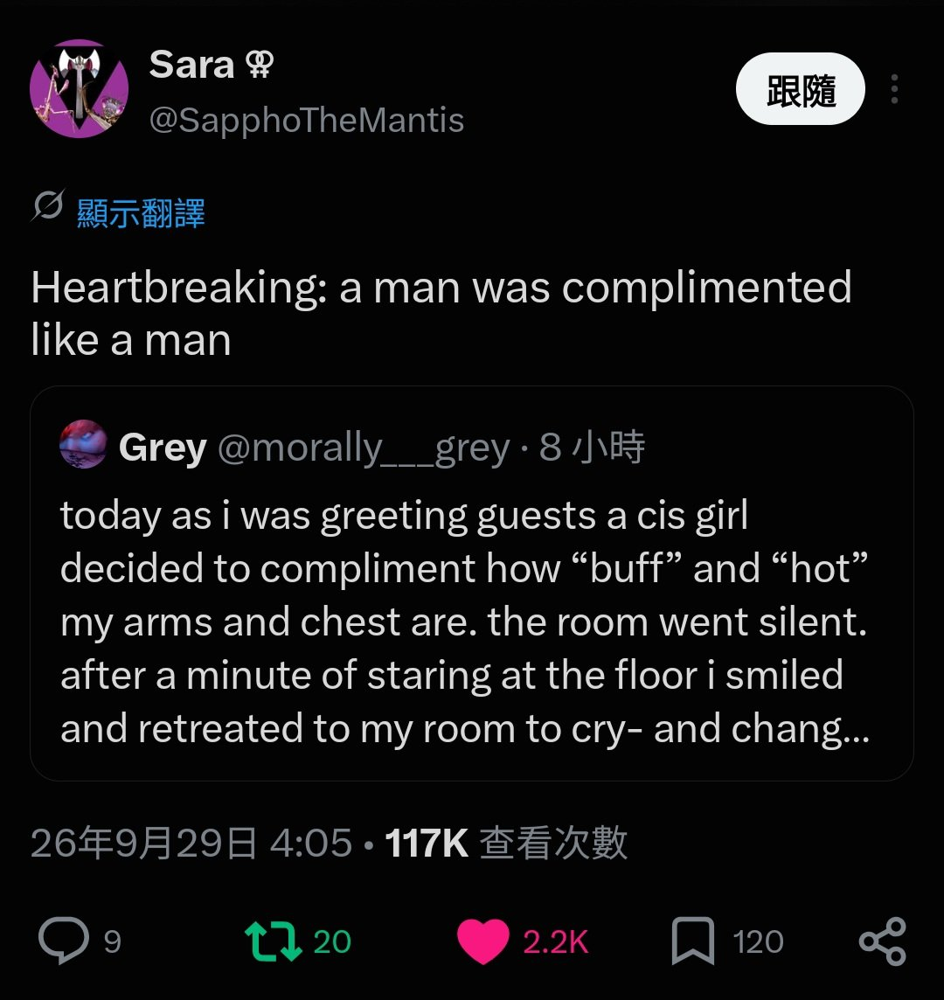
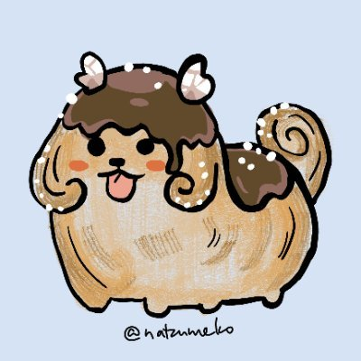

amber水母🍥
@amber_medusozoa
@aobashizuu_ 因为「粗壮的手臂」一直以来都是作为我们拥有「男性威胁」的理由使用的，提及这一点有概率引发PTSD。当然我也不觉得这个跨女做的是对的，因为她哭也是在给女性增添麻烦，她应该和我一样偷偷把自己饿到瘦瘦弱弱的，让自己不要威胁伤害到任何人


静緒 𝐒𝐡𝐢𝐳𝐮𝐨
@aobashizuu_
有一個女生覺得他的肌肉很好看，誇他手臂很壯、胸肌很漂亮，太辣了、太有魅力了。然後他崩潰了，躲回房間哭
後來女生跟他道歉了，解釋自己是衷心稱讚對方的，完全沒有惡意。推主開始教育她，說你們順女跟跨女說話要很注意措辭，不能隨便評論身材
留言區說順女總是會展露出對跨女的惡意，故意傷害跨女 https://t.co/9teg60RkJg https://t.co/rdK6QdcYgF